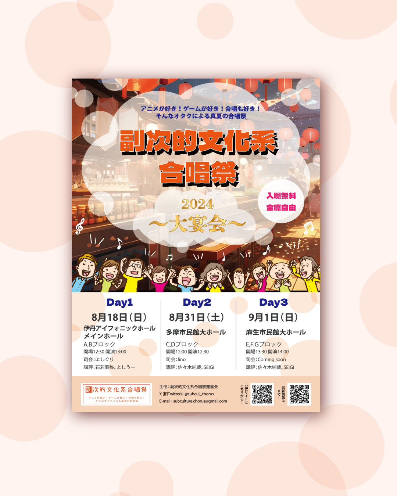
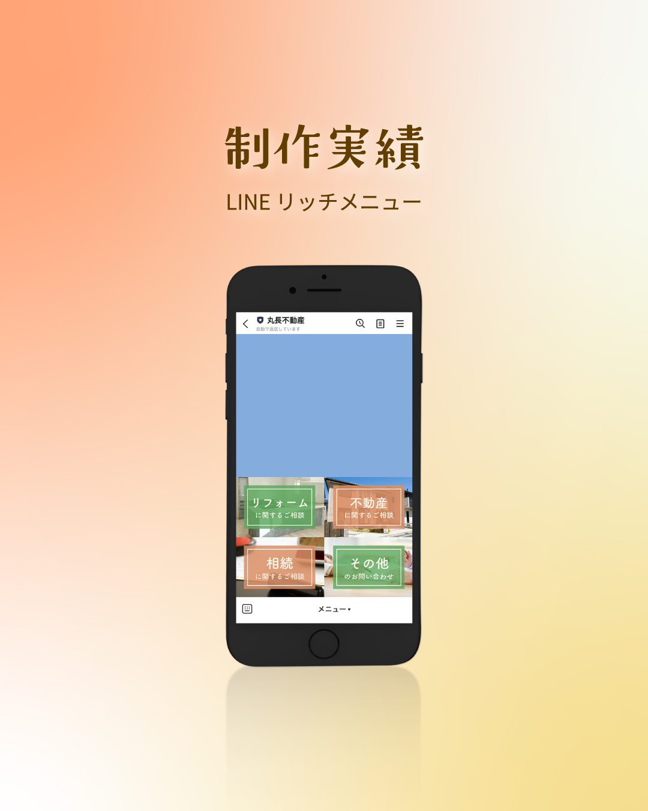
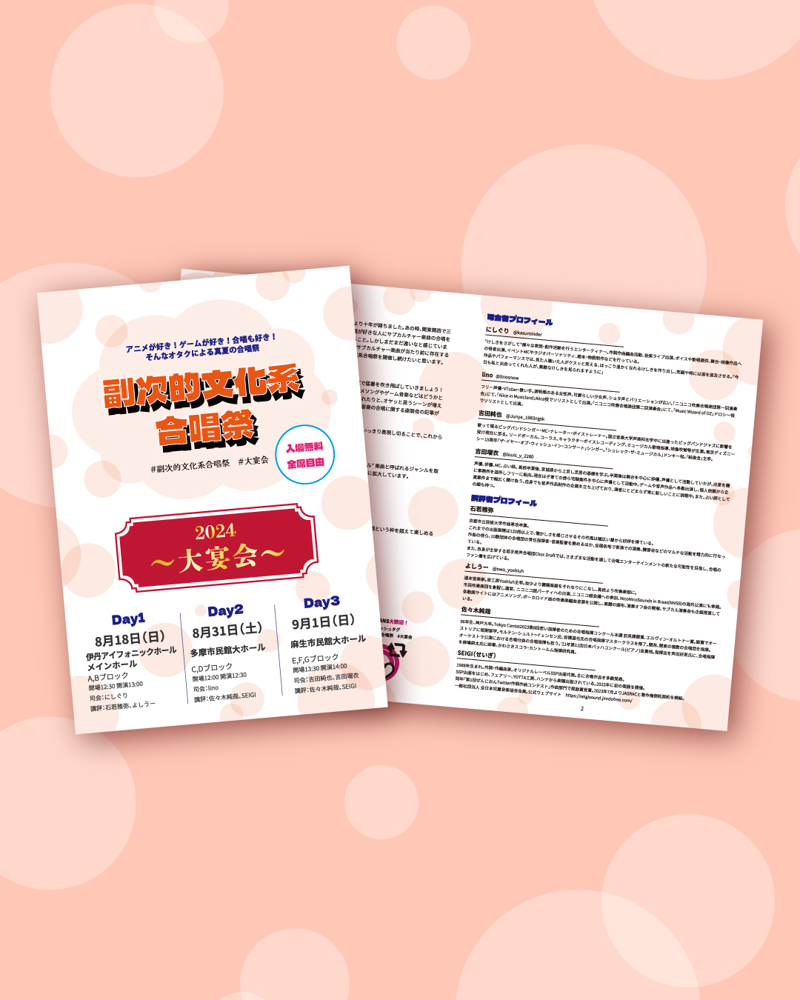
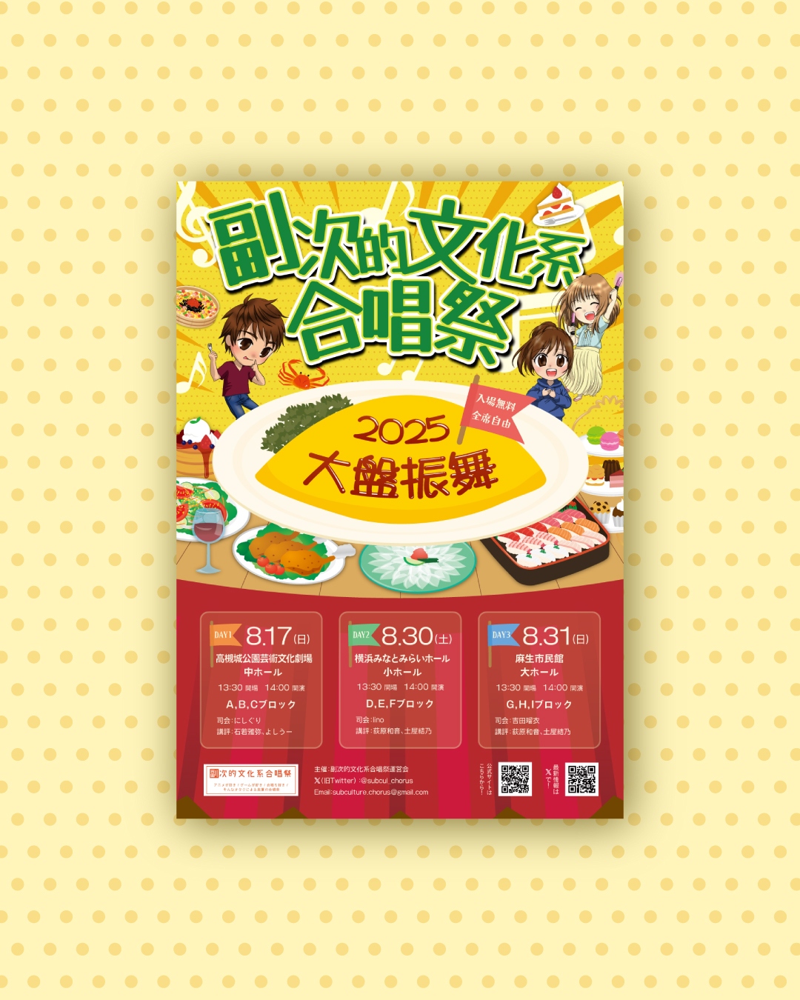
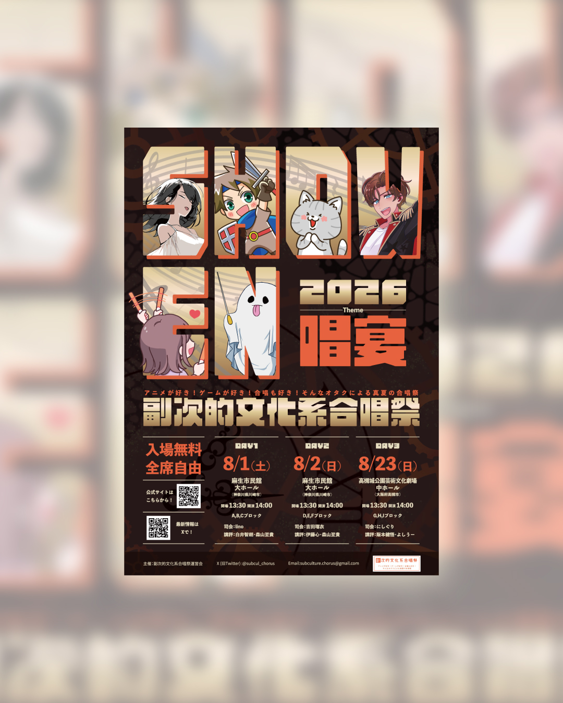

WORKS
作ったもの
これまでに作ったものを、
一部ご紹介します。


その他
結婚式 メニュー表
鮮やかな色と和のモチーフで、特別な一日を彩るメニュー表を作成しました。

チラシ
ピアノコンサート チラシ
出演者の写真と緑を基調に、ピアノコンサートのチラシとプログラムを制作しました。

Webサイト
イラストレーター Webサイト
イラストの世界観が伝わる、作品を主役にしたWebサイトを制作しました。

その他
演奏会プログラム
演奏会の楽しさが伝わる表紙と、出演者・曲目を読みやすくまとめたプログラムを制作しました。

名刺・カード
名刺デザイン
料理の写真と落ち着いた色合いを組み合わせた名刺です。

チラシ
合唱祭 チラシ（2024）
公演情報と出演団体を掲載した合唱祭のチラシです。

SNS画像
LINE リッチメニュー
サービスごとの案内をまとめた、公式LINEのリッチメニューです。

その他
合唱祭 プログラム（2024）
演奏曲目や出演団体の情報をまとめた合唱祭のプログラムです。

Webサイト
リフォーム会社 Webサイト
施工写真とサービスの案内を掲載した、リフォーム会社のWebサイトです。

チラシ
合唱祭 チラシ（2025）
黄色を基調に、音符やイラストで楽しさを表現した合唱祭のチラシです。

チラシ
合唱祭 チラシ（2026）
イラストと公演情報を組み合わせた合唱祭のチラシです。

その他
合唱祭 プログラム（2026）
表紙と掲載内容をまとめた、合唱祭のプログラムです。
このカテゴリーの制作物はありません。